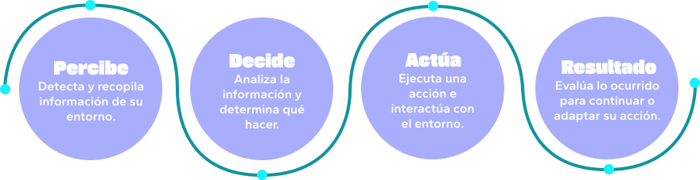

De la NUBE a lo CORPOREO
Agentes, Robots y su desarrollo
La Inteligencia Artificial o IA como suelen llamarla, dejó de ser una idea propia de la ciencia ficción para convertirse en parte de nuestra vida cotidiana. A medida que la tecnología avanza, la frontera entre lo digital y lo físico comienza a hacerse cada vez más difusa.
Desde los PRIMEROS AGENTES
IAs generativas y su alcance
¿Sabés qué son los agentes de IA?
Un sistema capaz de utilizar IA para alcanzar un objetivo. Puede analizar información, planificar
acciones,
tomar decisiones y adaptarse durante el proceso.
de uso
Los ROBOTS del siglo XXI
¿Criterio propio?
¿La IA y los Robots
combinados?
Cuando la IA sale del mundo digital y se incorpora a sistemas físicos,
puede transformar decisiones en acciones reales. La combinación de IA y
robótica permite desarrollar máquinas capaces de realizar tareas de forma autónoma o semiautónoma, mientras
que los robots industriales aportan precisión, rapidez y fuerza para
facilitar y transformar el trabajo humano.
